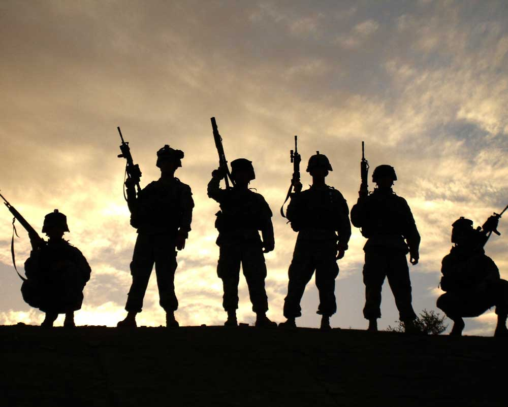

Air Force & Beyond
On March 25, 2013 at 19 years old I was shipped off to military basic training, better known as BMT, Lackland, Texas for eight weeks to begin my journey of six years in the Air Force. During the duration of training I learned the fundamentals of mental and physical toughness through individual and team based military evaluations. As well as rigorous outdoor physical training that include calisthenics and cardio. Also, I learned attention to detail as we were trained to follow every order to its exact word and were promptly corrected otherwise.
Once I graduated BMT I went to technical school for two months where I learned my job, security forces. During those two months I was taught the ability to learn quickly and to be coachable along with lessons that reinforced the previous soft skills taught in BMT. Once at my first base, Luke AFB, Az my skills taught to me proved valuable and I gained rank in a timely manner.
During the rank of E-4 I was deployed for six months to the middle east. I started to assume more leadership roles under a high stress environment that naturally comes along when being deployed. Here I was assigned three troops who had three different personalities and goals professionally as well as personally. So, I was required to develop strong leadership skills in order to be an effective supervisor. Some of the leadership tactics I used included active listening, the use of intentional questions, and reading non-verbal cues. These skills allowed me to cultivate a rapport with my subordinates where they trusted the decisions, I made but felt comfortable enough to share opinions and thoughts openly when appropriate.
Once back from my deployment I continued to use my leadership skills stateside which allowed me to promote one more time to E-5 before getting out of the military. During my transition out of the military I learned how to switch careers, how to use my benefits and experience in the military to start my journey as a web developer and acclimate to the civilian workforce.